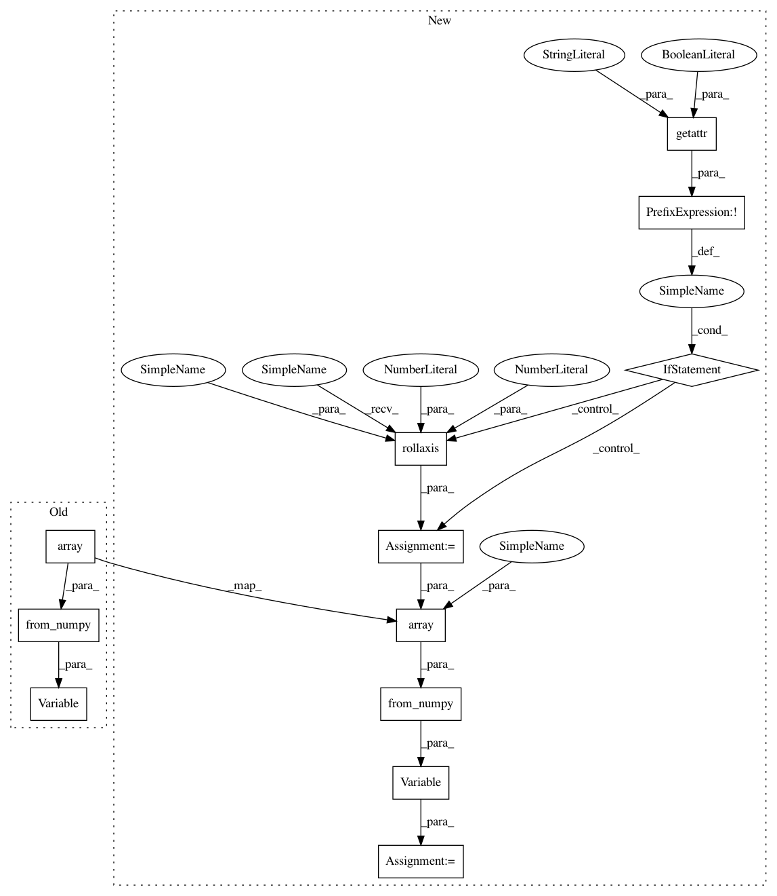

47478c01bde169ebb7595bbc0189a751db3e0610,pyannote/audio/embedding/approaches/triplet_loss.py,TripletLoss,fit,#TripletLoss#Any#Any#Any#Any#Any#Any#Any#Any#,331
Before Change
batch = next(batches)
X = Variable(torch.from_numpy(
np.array(np.rollaxis(batch["X"], 0, 2),
dtype=np.float32)))
if gpu:
X = X.cuda()
batch["X"] = X
After Change
batch = next(batches)
X = batch["X"]
if not getattr(model, "batch_first", True):
X = np.rollaxis(X, 0, 2)
X = np.array(X, dtype=np.float32)
X = Variable(torch.from_numpy(X))
if gpu:
X = X.cuda()
batch["X"] = X
In pattern: SUPERPATTERN
Frequency: 3
Non-data size: 12
Instances
Project Name: pyannote/pyannote-audio
Commit Name: 47478c01bde169ebb7595bbc0189a751db3e0610
Time: 2018-02-22
Author: bredin@limsi.fr
File Name: pyannote/audio/embedding/approaches/triplet_loss.py
Class Name: TripletLoss
Method Name: fit
Project Name: pyannote/pyannote-audio
Commit Name: 47478c01bde169ebb7595bbc0189a751db3e0610
Time: 2018-02-22
Author: bredin@limsi.fr
File Name: pyannote/audio/embedding/approaches/triplet_loss.py
Class Name: TripletLoss
Method Name: fit
Project Name: pyannote/pyannote-audio
Commit Name: 47478c01bde169ebb7595bbc0189a751db3e0610
Time: 2018-02-22
Author: bredin@limsi.fr
File Name: pyannote/audio/embedding/extraction.py
Class Name: SequenceEmbedding
Method Name: postprocess_ndarray
Project Name: pyannote/pyannote-audio
Commit Name: 47478c01bde169ebb7595bbc0189a751db3e0610
Time: 2018-02-22
Author: bredin@limsi.fr
File Name: pyannote/audio/labeling/base.py
Class Name: SequenceLabeling
Method Name: postprocess_ndarray